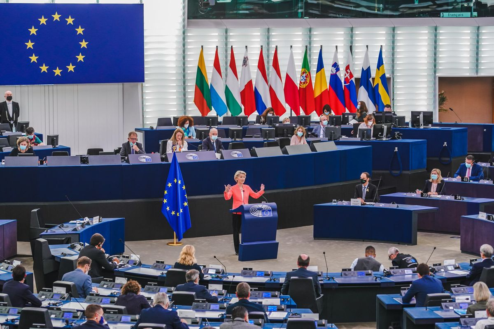
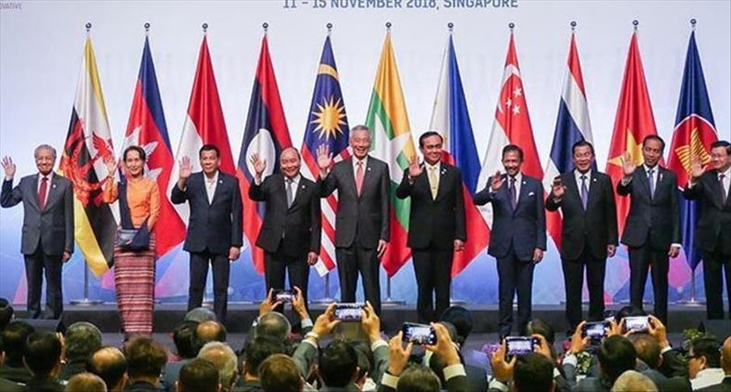
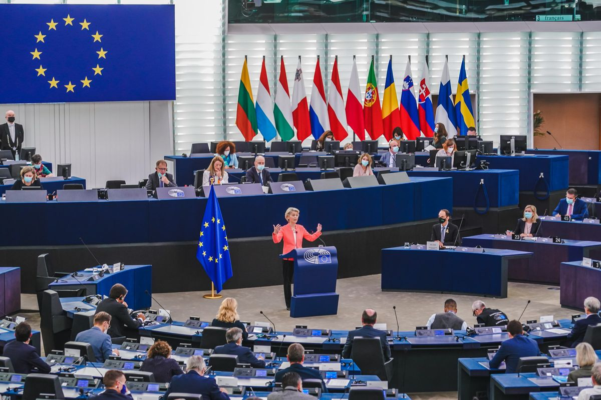
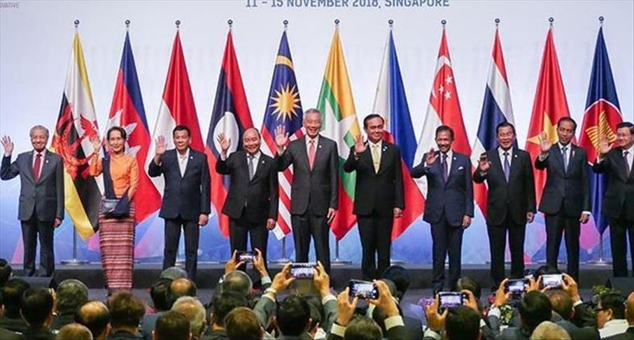

.png)
Kerja sama Regional adalah bentuk kerja sama antara beberapa negara yang berada dalam satu kawasan atau wilayah tertentu. Tujuannya untuk meningkatkan kesejahteraan, keamanan, dan stabilitas kawasan, serta mempererat hubungan antarnegara tetangga. Tujuannya untuk dapat meningkatkan kesejahteraan ekonomi antarnegara di kawasan, memperkuat perdamaian dan keamanan, meningkatkan hubungan sosial dan budaya, mempercepat pembangunan di bidang pendidikan, teknologi, dan lingkungan, menyelesaikan permasalahan kawasan secara bersama-sama.

 



Ekonomi → perdagangan bebas antarnegara. Pendidikan dan kebudayaan → pertukaran pelajar, pertukaran budaya, beasiswa antarnegara. Lingkungan → menjaga kelestarian hutan tropis dan laut bersama. Keamanan → kerja sama menghadapi terorisme, perdagangan manusia, dan narkoba. Kesehatan → kerja sama menghadapi pandemi dan penyakit menular
Organisasi yang diikuti Indonesia: ASEAN (Association of Southeast Asian Nations) → 8 Agustus 1967 di Bangkok, Thailand. Contohnya: Ekonomi - AFTA (ASEAN Free Trade Area) Pendidikan - AUN (ASEAN University Network)
Negara-negara dalam 1 kawasan memungkinkan adanya masalah pembangunan yang sering terjadi, sehingga saling bekerja sama mencari solusi dengan cepat dan efektif. Kerjasama Regional memudahkan penyelarasan kebijakan lingkungan, ekonomi, kesehatan, dan pendidikan agar sejalan dengan target SDGs.
Hubungan dengan SDGs 4: Melihat standar pendidikan di seluruh kawasan agar dapat dicontoh atau agar kualitas pendidikan tidak terlalu berbeda. Mempermudah pertukaran pelajar, guru, tenaga untuk meningkatkan keterampilan dan pengalaman belajar.